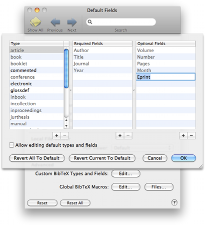

Custom Types and Fields Custom Types and Fields
Custom Types and Fields Custom Types and FieldsThe TypeInfo Editor allows you to add and manage custom types and fields to BibDesk. You can add new types, add new fields to existing types, or change the order in which BibDesk presents the types and fields.
You can open the TypeInfo Editor by choosing the "Edit..." button under "Advanced Custom BibteX types and fields" in the Default Fields Preferences.

The Required Fields and Optional Fields tables list the fields for the currently selected type.
You can add new types and fields by choosing the "+" buttons under the respective tables. You can remove selected typed or fields from one of the lists by choosing the appropriate "-" button.
By dragging the entries, you can change the order in which the fields and types are presented to you in the Editor window.
Choosing the "Revert All To Default" button will revert all the types and fields to their default values. Choosing the "Revert Current To Default" button reverts only the fields for the currently selected types to the defaults. Note that this will remove all the fields for new custom types, but not the types themselves.
When you are done editing, you should choose the "OK" button to save your edits. If you choose the "Cancel" button, your changes will be lost.